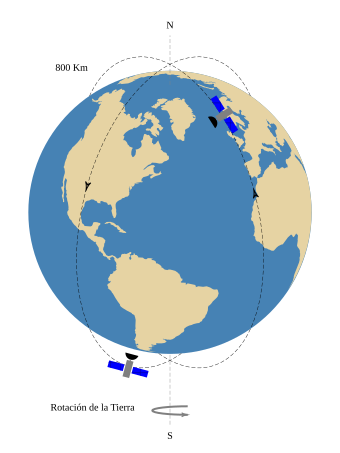

Órbitas polares — dos satélites sobre un globo en proyección ortográfica
Dos órbitas polares inclinadas ±15° alrededor de la Tierra, con un satélite en cada una y flechas de sentido de marcha. Cada órbita se dibuja como un ARCO ELÍPTICO cuyo barrido salta el tramo que pasa por detrás del globo: la oclusión sale de una fórmula cerrada evaluada en el propio .mg, sin recortes a mano. Los satélites se posan sobre la órbita por su ángulo paramétrico, ya orientados a la tangente, y el globo es un mapa vectorial real incluido de lib/.
orbita_polar.mg
ver en GitHubVer el código que la dibuja
% Órbitas polares — dos satélites sobre un globo en proyección ortográfica
%
% Dos órbitas polares inclinadas ±15° alrededor de la Tierra, con un satélite en cada
% una y flechas de sentido de marcha. Cada órbita se dibuja como un ARCO ELÍPTICO cuyo
% barrido salta el tramo que pasa por detrás del globo: la oclusión sale de una fórmula
% cerrada evaluada en el propio `.mg`, sin recortes a mano. Los satélites se posan sobre
% la órbita por su ángulo paramétrico, ya orientados a la tangente, y el globo es un mapa
% vectorial real incluido de `lib/`.
%
% NOTAS --------------------------------------------------------------------
% FIGURA ORIGINAL (didáctica): reconstruye una lámina de clase sobre órbitas polares.
% No reproduce una publicación, así que lleva nombre de física.
%
% ESCALA REAL, NO A OJO: el semieje mayor sale de `orbit_km` sobre `earth_km`, y el
% rótulo se arma con esa misma variable. La lámina de la que viene dibujaba la órbita
% mucho más alta de lo que decía su letrero (equivalía a ~1500 km, no a 800); aquí no
% puede pasar, porque el número que gobierna la geometría es el que se imprime. A 800
% km la órbita queda apenas 12.6% sobre la superficie: se ve rasante, que es lo que es.
%
% OCLUSIÓN — de dónde sale `tc`. La órbita es la proyección de un círculo 3-D de radio
% b inclinado; su eje MAYOR es la línea de nodos, así que en el marco propio
% P(t) = (a·cos t, b·sin t) la mitad LEJANA es t ∈ (90°, 270°). El cruce con el limbo
% sale de |P(t)|² = R², que con órbita y globo concéntricos es forma cerrada:
% a² + (b² − a²)·sin²t = R² → sin t = √((R² − a²)/(b² − a²))
% Oculto = lejano ∩ dentro del disco = t ∈ (180−tc, 180+tc); aquí tc ≈ 56.8°, o sea un
% tramo oculto de 113.6°. Los cortes caen sobre el limbo por construcción: el
% disco del mapa es un `circle(1)` escalado por `scale=earth_radius`, o sea el mismo R
% y el mismo centro de la ecuación. NO hace falta álgebra booleana de paths: la
% oclusión es profundidad, y una
% intersección de contornos en 2-D no sabe qué mitad está detrás.
%
% CUÁL MITAD VA DETRÁS es modelado, no geometría: la 2-D admite las dos. Se eligieron
% OPUESTAS —una esconde su izquierda, la otra su derecha— para que se lean como dos
% planos que se cruzan y no como copias de uno solo.
%
% SATÉLITE DE ABAJO: 270° es el extremo inferior del eje mayor y cae a 2° de la
% dirección en que se proyecta Bolivia (lat −17, lon −65) en la vista lat 30, lon −55
% del mapa, que es (−0.83, −3.62) desde el centro del globo, o sea −102.9°.
%
% ESCALA DEL ICONO: `Satellite` (lib/satellite.mg) no declara `world_window`, así que
% `scale=0.8` multiplica su tamaño natural (~1.8 u de ancho). Igual que en
% gravitacion_orbita.
%
% COBERTURA EXCLUSIVA: es el único ejemplo del corpus que ejercita `arc(rx, ry)`,
% `marker_at` (marcadores en ángulos paramétricos) y `place(..., rx/ry, at=)` (una
% struct completa posada sobre un arco elíptico). Si sale del corpus, esas tres
% características se quedan sin pruebas.
display_size 12 16
world_window -6 6 -8 8
include "../lib/mapa_p30_n55.mg"
include "../lib/satellite.mg"
earth_radius = 5
earth_y = .5
% La altura de la órbita se declara en kilómetros y de ahí sale la geometría: así el
% dibujo no puede contradecir al rótulo.
earth_km = 6371
orbit_km = 800
% Eje de rotación, partido para no cruzar el globo, y la flecha de giro al pie.
polyline(dash="dashed", line_width=0.4, color="gray") { 0 -7 0 (earth_y - earth_radius) }
text("N", align="center") { 0 7 }
text("S", align="center") { 0 -7.5 }
arrow_rx = 1.25
arrow_ry = 0.15
text("Rotación de la Tierra", align="right") { -arrow_rx -6.5 }
arc(rx=arrow_rx, ry=arrow_ry, line_width=2, color="gray", from=90, to=270,
marker_end="arrow", marker_size=3) { (0.5*arrow_rx) -6.5 }
% El globo: mapa vectorial de lib/, y el tramo de eje que asoma sobre el polo norte.
Mapa(scale=earth_radius, at=(0, earth_y), grid=false, limb=false)
polyline(dash="dashed", line_width=0.4, color="gray") { 0 (earth_y + earth_radius - .5) 0 6.75 }
% Las dos órbitas
{
% El semieje MAYOR es el radio orbital a escala: el globo mide earth_radius, así que
% la órbita mide eso por (R+h)/R. El menor es su escorzo, y con él se declara la
% inclinación del plano orbital respecto a la dirección de vista.
plane_angle = 33
axis_y = earth_radius * (earth_km + orbit_km)/earth_km
axis_x = axis_y * sin(plane_angle*pi/180)
% Semiángulo del tramo oculto: el arco entra al disco en 180−tc y sale en 180+tc.
% La derivación, en las NOTAS.
s = sqrt((earth_radius*earth_radius - axis_x*axis_x)/(axis_y*axis_y - axis_x*axis_x))
tc = deg(asin(s))
% El giro es alrededor del centro de la Tierra: `rotate` gira el plano entero, así
% que primero se lleva el origen al centro y las órbitas van ya en {0 0}. Las
% sentencias componen en el orden escrito: esto es T·R.
translate 0 earth_y
rotate 15
% Primera órbita: esconde su mitad izquierda, así que se traza de 180+tc a 540−tc
% (270° de barrido). `marker_at` estampa la flecha de sentido en un ángulo
% paramétrico —el mismo que from/to—, orientada a la tangente; 360 es el extremo
% derecho del eje menor, el punto más ancho, donde mejor se lee la dirección.
arc(axis_x, axis_y, from=(180+tc), to=(540-tc), dash="dashed", line_width=0.4,
marker="arrow", marker_at=[360], marker_size=4) { 0 0 }
% El satélite se posa sobre la órbita por su ángulo, alineado a la tangente. Va
% dentro del bloque para que le toque la misma matriz, así que basta el centro.
place(Satellite, rx=axis_x, ry=axis_y, at=[30], scale=0.8) { 0 0 }
rotate -30
% Segunda órbita: esconde la mitad derecha, y su flecha va en el otro extremo.
arc(axis_x, axis_y, from=tc, to=(360-tc), dash="dashed", line_width=0.4,
marker="arrow", marker_at=[180], marker_size=4) { 0 0 }
% Su satélite, al pie de la órbita y sobre Sudamérica. Al ser el extremo del eje
% mayor la tangente es horizontal, así que queda acostado: contrapunto del de
% arriba, que va casi vertical.
place(Satellite, rx=axis_x, ry=axis_y, at=[270], scale=0.8) { 0 0 }
}
% El rótulo se arma con el mismo número que fijó la geometría, así que no puede
% quedar desmentido por el dibujo.
text(str(orbit_km) + " Km", align="right") { -2.9 5.5 }